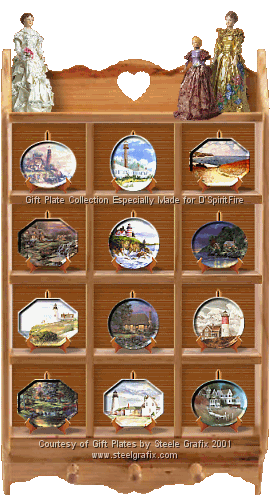
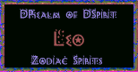
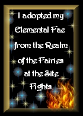
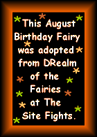

You are visiting 's website in the community. If you would like your
own free website, please Join!

Thank you
for stopping and visiting my teeny-tiny piece of the web! I've been a part of Site Fights for almost 7 years! I had
a site entered in TSF and I was also a part of the Spirits and
Fae families. For those who have never met me...I'm known
around The Site Fights as 'Fire', or 'SpiritFire'!
I'm a stay-at-home wife/mom. Been married almost
forever! We have 3 kids...well, actually a young adult and 2
kids. Our oldest is 23, 0ur middle daughter is 18, and just
graduated high school... And our "baby" is 8, yes 8 years old!
She's going into third grade and quite the mommas girl, no
complaints! My hubby is a diesel mechanic, loves the
outdoors! We enjoy camping and boating. He fishes, I tan. :)
I'm a reader...I'll read almost anything, even the backs of
cereal boxes! My favorite is Stephen King! Been reading Mr.
King's work since I was 13! I like to do craft things... and
I'm a collector! I collect almost anything that doesn't move!
Right now, I'm collecting lighthouses. Tomorrow, it'll be
something else! :) I also LOVE to create web pages and graphics!
Well, I'm back with a new site... a little more personal
and a lot more about myself, my family and my interests. Not
quite sure exactly what it's about... You will see some stuff
that I salvaged from my old site, some of my favorite things
from TSF!
I've been working on creating new backgrounds, and
updating these pages... so please bear with me as I update, I
have so many to do and so many things saved to get uploaded!!
Enjoy your visit and please sign my
Spiritbook.



Please take a moment and visit my beautiful birthday
pages!! Made for me by my TSF family!
*COMING
SOON* Wanna drop me a note? Here's a couple of email
addresses I use: Personal: mi_firelady@hotmail.com
dfire_tsf@yahoo.com For "The Site Fights" related email, please
use: dfire@thesitefights.com Thanks! ~Donna